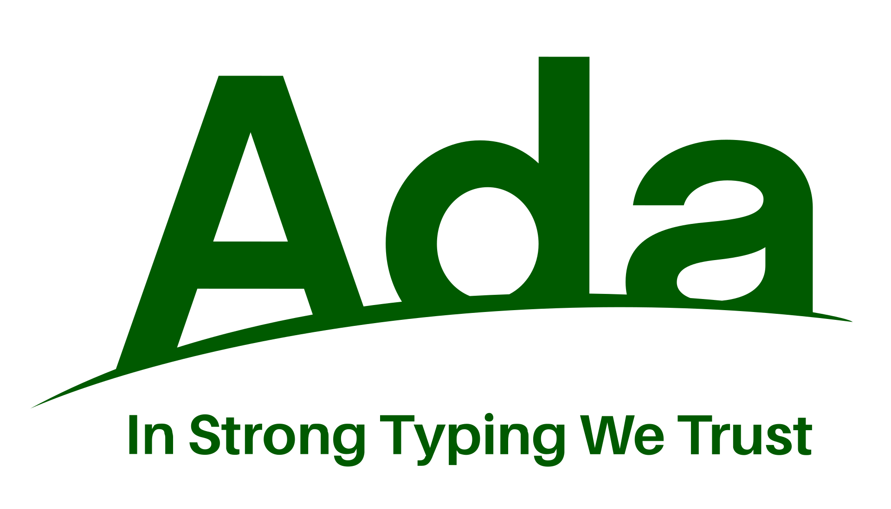
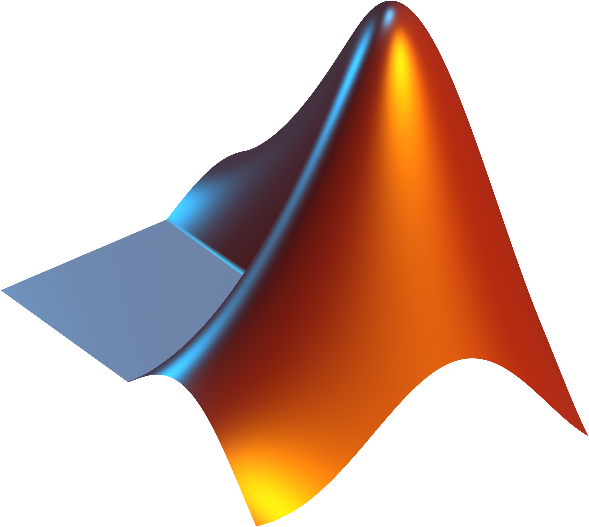
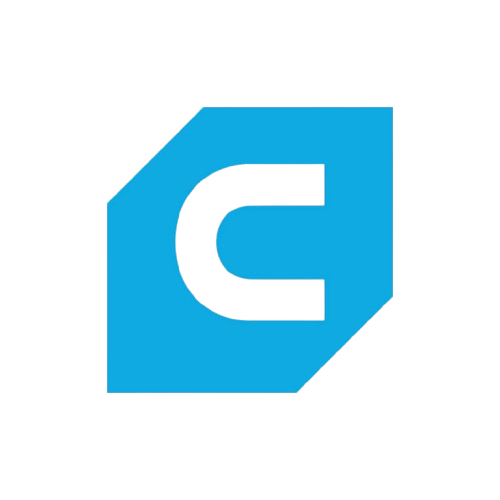
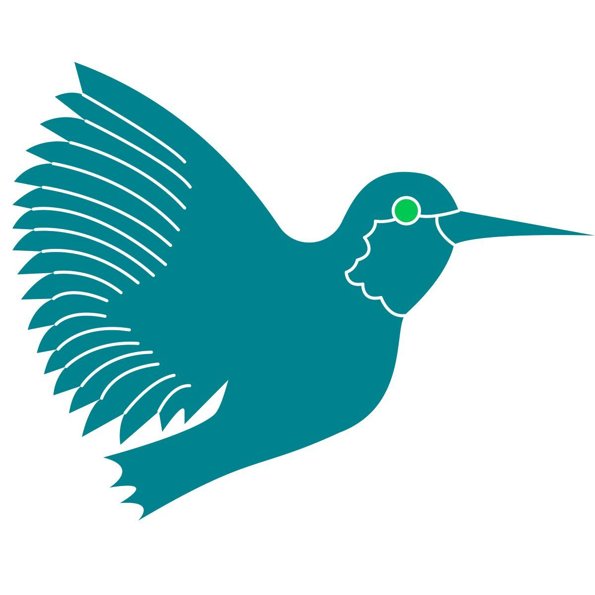
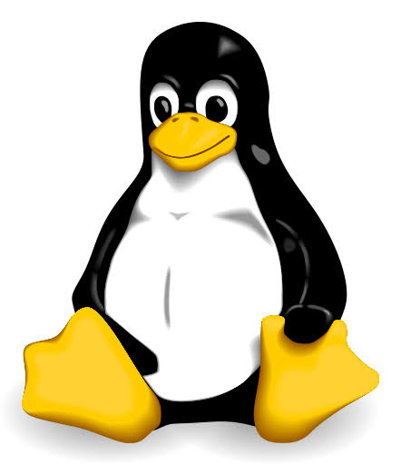
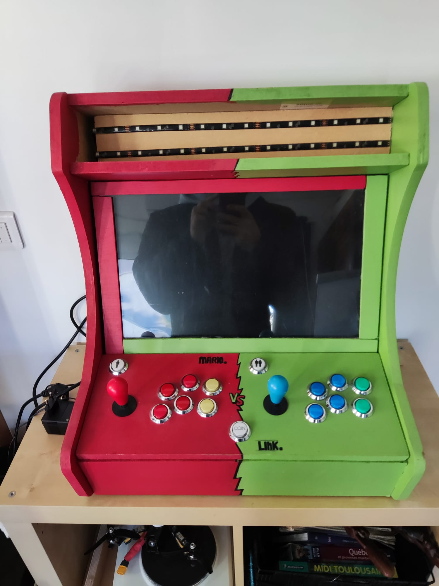
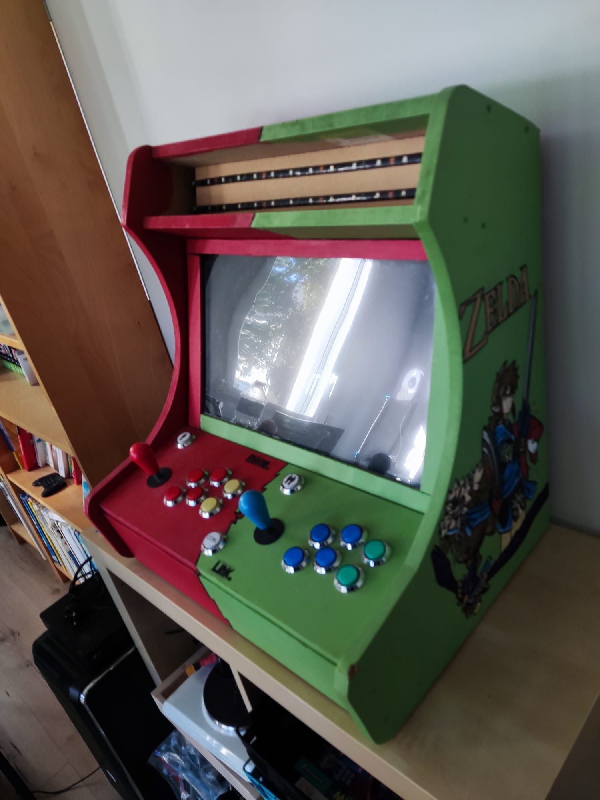

Je suis Tom, élève-ingénieur en sciences numériques. Retrouvez ici mes projets, réalisations et compétences.
Vers la cybersécurité,
à travers mon parcours.
Élève-ingénieur en sciences numériques à l'ENSEEIHT, passionné par l'informatique et l'électronique, je me dirige vers la cybersécurité. J'aime concevoir des solutions techniques de A à Z. Retrouvez ici un aperçu de mon parcours, de mes compétences et des projets menés à bien.
Parcours Académique
Formation scientifique et cursus d'ingénieur en sciences numériques.
ENSEEIHT (Toulouse) :École d'ingénieurs — Spécialité Sciences du Numérique (en cours).
Lycée Saliège (Balma) :Deux années de Classes Préparatoires aux Grandes Écoles (CPGE) — Filière PCSI / PSI.
Lycée Saint-Joseph (Périgueux) :Baccalauréat Général — Spécialités Mathématiques, Physique-Chimie et option Mathématiques Expertes.
Compétences & Outils
Environnements de développement, systèmes d'exploitation et qualités personnelles.
Langages & Logiciels




Systèmes & Gestion

Qualités Personnelles
Travail en équipe
Gestion de projet
Créativité
Résolution de problèmes
Adaptabilité
Réalisations & Projets
Aperçu de mes projets techniques, de développement et de conception.


Réalisation d'une borne d'arcade
Conception et réalisation de A à Z d'une borne d'arcade fonctionnelle permettant d'émuler de nombreuses consoles. La borne d'arcade tourne sur un ancien pc de récupération avec comme système d'exploitation Recalbox.
J'ai réalisé un drone FPV (First Person View) à l'aide de pièces détachés achetés séparément en ligne. Le tout a été monté et ajuster par moi même, cela impliquant notamment de la soudure et des réglages logiciel. Au final, le drone vol parfaitement et peut atteindre jusqu'à 90 km/h.
Ouverture culturelle, projets internationaux et maîtrise des langues.
PCE (Projet de Mobilité / Cours) :Dans le cadre de mon cursus d'ingénieur en sciences du numérique à l'ENSEEIHT, je prépare une expérience de mobilité internationale axée sur l'immersion technologique et culturelle en Chine. Cette démarche vise à confronter mes compétences à un écosystème d'innovation de premier plan et à élargir ma vision des projets industriels mondiaux.
Langues & Compétences Linguistiques :
Français :Langue maternelle
Anglais :Niveau B2 (maîtrise technique et professionnelle)
Chinois :En cours d'apprentissage à l'ENSEEIHT (objectif d'acquisition B1)
Engagement & Éco-responsabilité
Implication associative, vie étudiante et sensibilisation aux enjeux durables.
7Robot :Membre actif de l'association de robotique de l'ENSEEIHT, avec pour objectif la participation à la Coupe de France de Robotique.
TVN7 :Implication au sein de l'association vidéo de l'école, dédiée à la réalisation, au montage et au suivi audiovisuel des événements de l'ENSEEIHT.
Fresque du Climat :Dès la première année de mon cycle ingénieur, j'ai eu l'occasion de réaliser une fresque du climat, en collaboration avec d'autres élèves de l'ENSEEIHT. Cela nous a permis de prendre conscience des enjeux climatiques de notre époque et des défis que nous aurons à relever en tant que futurs ingénieurs.
Festival « Futur Proche » :L'ENSEEIHT ainsi que les différentes universités de Toulouse m'ont permis de participer au festival « Futur Proche », regroupant de nombreuses conférences, ateliers et présentations sensibilisant sur les enjeux climatiques, notamment du point de vue scientifique à travers les différentes innovations apportées ou en cours de développement.
Procès de King Kong :Également en première année d'école d'ingénieur, j'ai pu assister et participer à la pièce de théâtre interactive « Le procès de King Kong » portant sur les violences sexistes et sexuelles (VSS) et leurs conséquences.
Sport & Activités
Musculation :Pratique soutenue à raison de 5 séances par semaine en salle.
Badminton :Cours hebdomadaires le jeudis soir à l'association sportive Toulouse INP.
Course à pied :Sessions de course prévues le dimanche pour compléter la préparation physique.
Loisirs :Amateur de cinéma.
Elevator Pitch
Découvrez ma vidéo de présentation résumant mon parcours et ma proposition de valeur unique (UVP).
Projet Professionnel
Stages & Expériences
Stages à Enedis :En seconde, j'ai dû effectuer un stage de 2 semaines chez Enedis. J'y ai découvert tous leurs secteurs d'activité ainsi que tous les métiers.
Job d'été (2023) :J'ai travaillé comme cabinier pendant un mois à la piscine Aquacap (Périgueux). Je m'occupais de l'entretien et de la maintenance de l'ensemble des installations de la piscine tout au long de la journée.